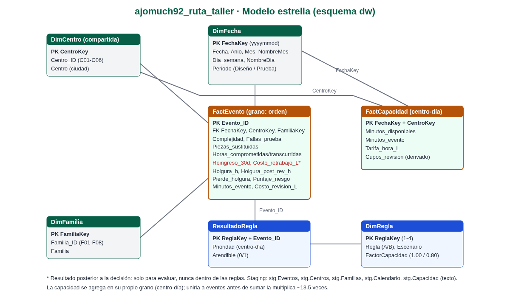

UTH · Inteligencia de Negocios · Semana 2 · Grupo 2
¿Qué órdenes conviene mandar a segunda revisión antes de cerrarlas
cuando el tiempo disponible es limitado?
Caso práctico #2 · Priorización con datos · Noviembre 2026
El negocio
RutaTaller opera en Tegucigalpa, San Pedro Sula, La Ceiba, Choluteca, Comayagua y Santa Rosa de Copán.
Cuando una orden está lista para cerrar, el supervisor puede enviarla a una segunda revisión (~13 minutos de un técnico).
El problema en cifras · julio-agosto 2026
Holgura = horas comprometidas − horas transcurridas. Si es negativa, la orden ya incumplió el plazo prometido.
Lo que hicimos · 1
10,010 órdenes
738 centro-día
6 centros
8 familias
123 días
carga por lotes a stg
limpieza a dw
Problemas encontrados: 10 copias exactas, fechas en dos formatos (2026-09-22 y 24/08/2026) y claves con espacios y minúsculas (" c03 ").
Lo que hicimos · 2
| # | Transformación | Resultado |
|---|---|---|
| T1 | Limpieza de claves (TRIM + UPPER) | 26 claves corregidas |
| T2 | Fechas en dos formatos → DATE | 40 convertidas, 0 fallidas |
| T3 | Conversión de tipos con TRY_CONVERT | 0 sin convertir |
| T4 | Deduplicación | 10,010 → 10,000 |
| T5 | Control de rangos | 0 fuera de rango |
| T6 | Validación de relaciones | 0 huérfanos |
| T7 | Campos derivados (holgura, puntaje, costo) | listos para las reglas |
Cada control queda registrado en etl.Control con su valor esperado y resultado OK.
Lo que hicimos · 3

La capacidad se suma en su propio grano (centro-día). Unirla a los eventos antes de sumar la infla 13.5 veces (40,368 → 546,252 minutos).
Lo que hicimos · 4 · Diagnóstico con julio-agosto
| Complejidad ↓ / Fallas → | 0 | 1 | 2 | 3 |
|---|---|---|---|---|
| 1 | 3.1 % | 5.2 % | 23.2 % | 29.4 % |
| 2 | 4.0 % | 4.6 % | 20.3 % | 19.2 % |
| 3 | 3.7 % | 5.0 % | 14.1 % | 16.7 % |
| 4 | 11.2 % | 17.2 % | 30.5 % | 25.0 % |
| 5 | 15.0 % | 19.1 % | 31.0 % | 23.7 % |
Complejidad ≥ 4 y 2 o más fallas de prueba multiplican el riesgo de 3-5 % a 15-31 %.
Reingreso_30d y Costo_retrabajo_L se conocen después: solo evalúan, nunca deciden.
Lo que hicimos · 5
Reúne: fallas ≥ 2 o complejidad ≥ 4.
Ordena: puntaje de riesgo, de mayor a menor.
Puntaje = 2·(fallas ≥ 2) + 1·(fallas = 1) + 2·(complejidad ≥ 4)
Desempate: más fallas → mayor complejidad → Evento_ID ascendente.
Capacidad: en cada centro y día se atienden las primeras ⌊minutos disponibles ÷ minutos por revisión⌋.
Lo que hicimos · 6 · Prueba con septiembre-octubre
| Regla · capacidad | Candidatas | Atendibles | Fuera de cap. | Costo laboral | Cobertura | Precisión | Pierden holgura |
|---|---|---|---|---|---|---|---|
| A · 100 % | 2,512 | 1,394 | 1,118 | L 75,166 | 49.2 % | 19.9 % | 6 |
| B · 100 % | 1,496 | 1,114 | 382 | L 60,145 | 38.2 % | 19.4 % | 0 |
| A · 80 % | 2,512 | 1,066 | 1,446 | L 57,576 | 38.4 % | 20.4 % | 6 |
| B · 80 % | 1,496 | 929 | 567 | L 50,302 | 32.2 % | 19.6 % | 0 |
Cobertura = reingresos en órdenes atendibles ÷ 565 reingresos del período. Precisión = reingresos ÷ atendibles (tasa general: 11.4 %). Costo = minutos ÷ 60 × tarifa del centro.
Los seis KPI · resultado y diagnóstico
Base: 10.91 % (jul-ago) · Meta: ≤ 9.5 %
Sentido: disminuir
Base: L 161.76 · Meta: ≤ L 141.5
Sentido: disminuir
Base: 50.7 % (A) · Meta: ≥ 45 %
Sentido: aumentar
Meta KPI 1: si la regla cubre ~50 % de los reingresos y la revisión evita 1 de cada 4 → 10.9 % × (1 − 0.5 × 0.25) ≈ 9.5 %. Denominador 0 → N/D, nunca 0 %.
Los seis KPI · diagnóstico y efectos adversos
Base: 20.0 % (1.8× la tasa general) · Meta: ≥ 18 %
Sentido: aumentar
Base: 0.72 % · Meta: ≤ 1 %
Sentido: mantener bajo
Base: L 268.87 · Meta: ≤ L 300
Sentido: disminuir
Meta KPI 6: ≈ 20 % del costo medio de un retrabajo (L 1,483). Todos los KPI se filtran por período, centro y familia en Power BI y dos se verifican en SQL.
Recomendación
Atrapa 62 reingresos más que B (278 vs 216) por L 15,021 adicionales.
El costo por reingreso cubierto es casi igual: L 270 vs L 278.
Con 20 % menos capacidad sigue por delante: 38.4 % vs 32.2 %.
Salvaguarda: si el KPI 5 pasa a rojo en un centro, ese centro aplica la Regla B.
Cobertura histórica ≠ efecto: el 49 % dice que la regla habría revisado esas órdenes, no que la revisión evite el reingreso. Eso lo mide el piloto.
Cómo medir el efecto
1 dic 2026 - 25 ene 2027 + 30 días de seguimiento. Cierre: 26 feb 2027.
Los 6 centros alternan semanas con y sin Regla A (3 por semana, orden aleatorio).
Reingreso de revisadas −25 % vs control; KPI 1 ≤ 9.5 %, KPI 5 ≤ 1 %, KPI 6 ≤ L 300.
En una frase
atrapa la mitad de los reingresos con la capacidad actual, por L 270 cada uno, sin comprometer los plazos. El piloto dirá cuánto de eso se convierte en reingresos evitados.
Entregables: Matriz KPI · Scripts SQL y diagrama · Evidencia de carga · PBIX · Recomendación ejecutiva